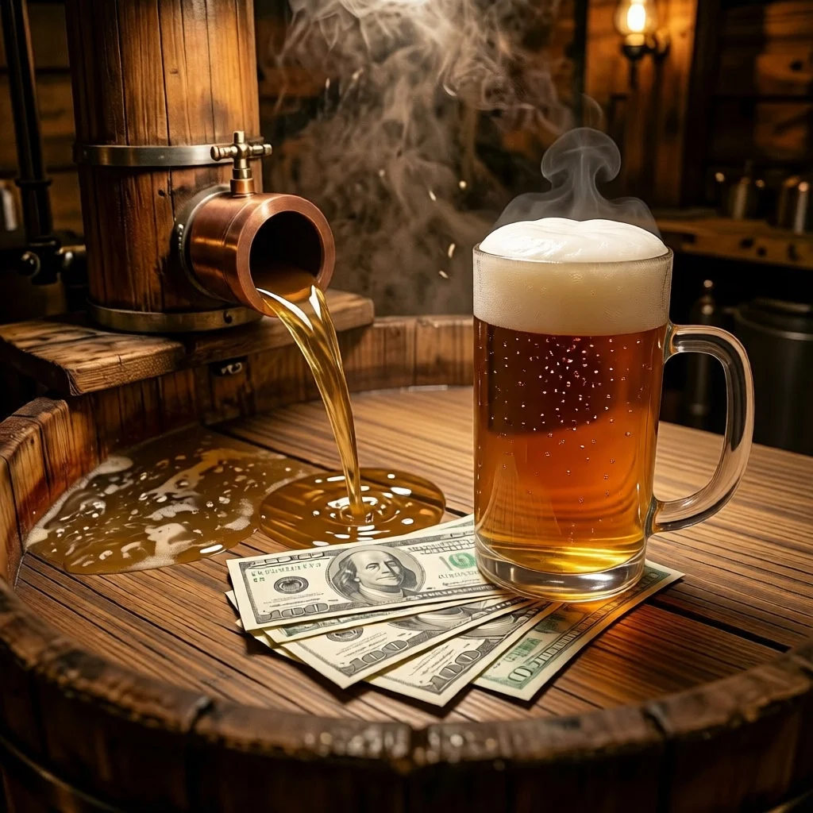

ДАЙДЖЕСТ / BODREEVSHOW
Бюджетное пиво

Бюджетное пивоварение: как сэкономить без потери качества
Домашнее пивоварение может быть не только увлекательным хобби, но и экономически выгодным занятием. Разберём, как сократить расходы на оборудование и ингредиенты, сохранив при этом высокое качество напитка.
С чего начать: бюджетное оборудование
Не обязательно сразу покупать профессиональную пивоварню. Для старта подойдёт обычная кухонная утварь:
Кастрюли из нержавеющей стали или эмалированные (объёмом 10–20 л) — для затирания и кипячёния сусла. Избегайте алюминия: он может вступать в реакцию с ингредиентами.
Пластиковая бродильная ёмкость с гидрозатвором — дешевле стеклянных или стальных ферментеров. Выбирайте пищевой пластик с УФ‑защитой.
Термометр (кухонный со шкалой до 100 ∘C) — критически важен для контроля температурных пауз.
Дуршлаг или марля — для первичной фильтрации затора.
Шланг для переливания (силиконовый или пищевой ПВХ) — для аккуратного розлива без взмучивания осадка.
Ареометр (опционально) — поможет контролировать плотность сусла и крепость пива.
Лайфхак: используйте кастрюли с толстым дном — они лучше распределяют тепло и снижают риск пригорания.
Экономия на ингредиентах
Солод: покупайте базовый светлый солод оптом (мешками по 25–50 кг) — цена за кг снижается на 20–30%. объединяйтесь с другими пивоварами для групповых закупок. для простых элей и лагеров достаточно 80–90% базового солода (Pale Ale, Pilsen), остальные 10–20% — специальные солода для цвета и вкуса.
покупайте базовый светлый солод оптом (мешками по 25–50 кг) — цена за кг снижается на 20–30%.
объединяйтесь с другими пивоварами для групповых закупок.
для простых элей и лагеров достаточно 80–90% базового солода (Pale Ale, Pilsen), остальные 10–20% — специальные солода для цвета и вкуса.
Хмель: прошлогодний хмель при правильном хранении (в вакууме или азоте, при −18 °C) почти не теряет свойств. Ищите скидки на старые партии. используйте универсальные сорта (например, Magnum для горечи, Cascade для аромата) — они дешевле редких.
прошлогодний хмель при правильном хранении (в вакууме или азоте, при −18 °C) почти не теряет свойств. Ищите скидки на старые партии.
используйте универсальные сорта (например, Magnum для горечи, Cascade для аромата) — они дешевле редких.
Дрожжи: повторно используйте осадок от предыдущей варки. После брожения аккуратно слейте пиво, оставив дрожжи в ёмкости, и храните в холодильнике до 2 недель. выбирайте сухие дрожжи — они дешевле жидких и имеют долгий срок хранения.
повторно используйте осадок от предыдущей варки. После брожения аккуратно слейте пиво, оставив дрожжи в ёмкости, и храните в холодильнике до 2 недель.
выбирайте сухие дрожжи — они дешевле жидких и имеют долгий срок хранения.
Вода: используйте фильтрованную или бутилированную воду. Водопроводная с хлором может испортить вкус.
используйте фильтрованную или бутилированную воду. Водопроводная с хлором может испортить вкус.
Сахар для карбонизации: вместо декстрозы используйте обычный рафинированный сахар (7–9 г/л). Разница во вкусе минимальна для светлых стилей.
вместо декстрозы используйте обычный рафинированный сахар (7–9 г/л). Разница во вкусе минимальна для светлых стилей.
Оптимизация процессов
Экстрактное пивоварение. Начните с охмелённого солодового экстракта — это сокращает этап затирания. На 20 л пива уйдёт около 3–4 кг экстракта + хмель для аромата. Экономия времени и энергии.
Лёгкие стили. Варите пиво с низкой плотностью (OG 1{,}035–1{,}045) — оно требует меньше солода и хмеля. Примеры: светлый эль, американский лагер, kölsch.
Мини‑партии. Освойте процесс на небольших объёмах (5–10 л), прежде чем переходить к 20+ л. Так вы минимизируете потери при ошибках.
Энергосбережение: кипятите сусло на индукционной плите — она быстрее нагревает и экономит электричество. после кипячёния охлаждайте кастрюлю в ванне с ледяной водой, а не проточной водой из‑под крана.
кипятите сусло на индукционной плите — она быстрее нагревает и экономит электричество.
после кипячёния охлаждайте кастрюлю в ванне с ледяной водой, а не проточной водой из‑под крана.
Дезинфекция без переплат
Заражение — главная причина испорченного пива. Дешёвые и эффективные средства:
Йод (1 мл 10% раствора на 10 л воды) — замачивайте оборудование на 15 минут.
Таблетки хлора (для бассейнов) — 1 таблетка на 10 л воды, экспозиция 30 минут. Тщательно ополаскивайте.
Пищевая сода — для удаления стойких загрязнений перед дезинфекцией.
Хранение и упаковка
Повторное использование тары. Пластиковые бутылки ПЭТ (из‑под газировки) выдерживают давление карбонизации. Проверьте целостность резьбы и крышек.
Стеклянные бутылки с многоразовой укупоркой — дороже на старте, но окупаются через 5–10 циклов.
Маркировка. Подписывайте бутылки (дата розлива, стиль, OG/FG) маркером на спиртовой основе — надписи не сотрутся.
Типичные ошибки и их устранение
Ошибка
Причина
Решение
Мутное пиво
Плохая фильтрация, не осаждённый белок
Дайте суслу отстояться 2–3 часа после кипячёния; используйте ирландский мох
Кислый вкус
Бактериальное заражение
Строго дезинфицируйте всё оборудование
Слабая карбонизация
Недостаток сахара, низкая температура дображивания
Добавляйте 7–9 г. сахара/л; выдерживайте бутылки 2 недели при 20–22 ∘C
Горькое пиво
Избыток хмеля или высокая pH воды
Контролируйте дозировку хмеля; корректируйте pH воды до 5,2–5,5
Заключение
Бюджетное пивоварение — это разумный подход к выбору ингредиентов, повторное использование ресурсов и оптимизация процессов. Следуя этим советам, вы:
снизите себестоимость пива в 2–3 раза;
сохраните качество за счёт строгого контроля гигиены и технологий;
получите удовольствие от творчества без лишних затрат.
Главное правило: экономия не должна идти в ущерб чистоте и точности. Экспериментируйте, ведите журнал варок и находите свои оптимальные решения!